Actori de teatru
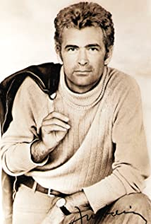
Iurie Darie
8.8
Născut pe 14 martie 1929 în Vadul Roșu, Jud. Soroca, aflat astăzi în Republica Moldova, celebrul actor de teatru,
film și televiziune, fiind dotat cu talent la desen, dar având și reale însușiri pentru scenă, Iurie Darie a dat examen
atât la Institutul de Arte Plastice, cât și la cel de Artă Teatrală și Cinematografică, reușind la ambele,
dar alegându-l pe ce din urmă, pe care l-a absolvit în 1952 la clasa marilor actori și profesori: Mihai Popescu și Marietta Sadova.
Absolvent al Institutului de Artă Teatrală și Cinematografică (IATC), actuala ATF, promotia 1952.
Debutează în anul 1953, în "Nepoții gornistului", în regia lui Dinu Negreanu și alături de Marga Barbu și Liviu Ciulei.
A interpretat roluri memorabile în peste 40 de producții cinematografice, a fost actor al Teatrului de Comedie din București
unde i-a avut ca parteneri pe marii actori: Gheorghe Dinică, Marin Moraru, Mircea Albulescu, Dem Radulescu, Sanda Toma,
Vasilica Tastaman, Consuela Roșu, Stela Popescu.
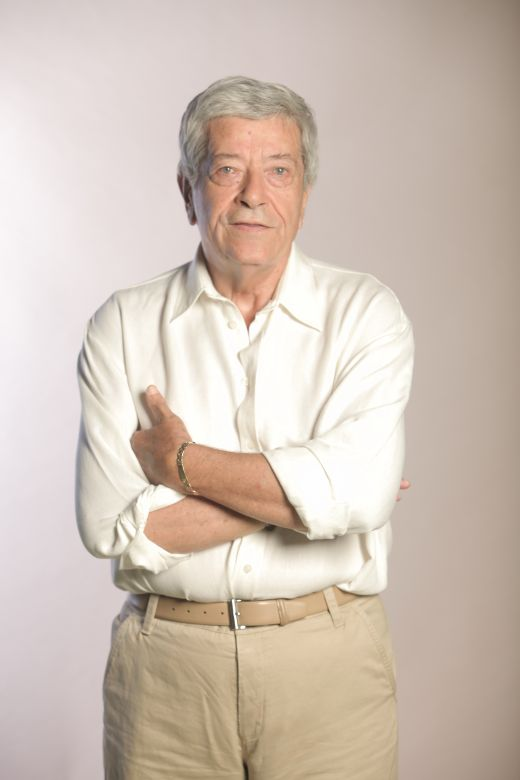
Ion Dichiseanu
5.9
Îndrăgitul actor de teatru și film s-a născut la Adjud pe 20 octombrie 1933 și în 1959 este absolvent al IATC.
După o îndelungată activitate la Teatrul Nottara și în filme, cu zeci de titluri la activ și deținătorul premiului ACIN 1979
pentru interpretarea din filmul "Clipa", rămâne în memoria cinefililor cu multe roluri interpretate dintre care reamintim:
Petrescu (Tunelul), Furius (Kampf um Rom I), Cpt. Margarit (Trandafirul galben), dar mai ales cu rolul Pierre Vaillant
din serialul de un succes incontestabil "Toate pânzele sus", regizat de Mircea Mureșan în 1976.
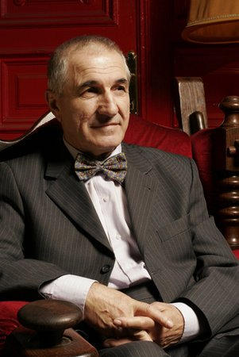
Gheorghe Dinică
8.2
În zorii zilei de 25 decembrie 1933, în prag de Crăciun, se năștea în Giulești, la periferia Bucureștiului, un băiat.
Părinții (Petre, funcționar la poștă, și Jana - casnică) au decis să-și înregistreze băiatul după Anul Nou.
Astfel, Gheorghe Dinică apare în certificatul de naștere ca fiind născut pe 1 ianuarie 1934.
Viitorul mare actor și-a petrecut copilăria tot în Giulești. „Strada pentru mine a fost lucrul cel mai important.
M-a învățat foarte multe, pentru că aveam prieteni mai mari care ne dirijau. Era o lume care nimeni n-ar crede că a existat,
lumea cartierului”, povestea Dinică autoarei Mia Pădurean, în monografia „Un actor pentru eternitate”,
apărută în 2008 la Editura Limes din Cluj-Napoca.
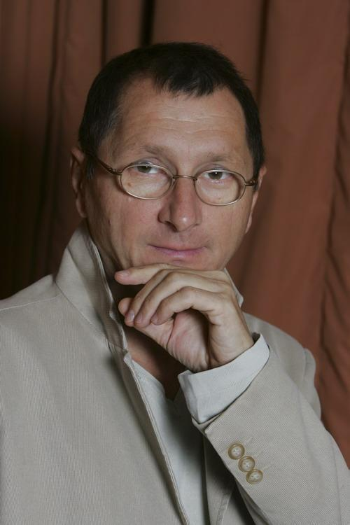
Horațiu Mălăele
6.5
Cunoscutul actor Horațiu Mălăiele s-a născut la 1 august 1952, în Târgu Jiu, județul Gorj.
Intenționa să urmeze Institutul de Arte Plastice din capitală dar a absolvit in 1975 Institutul de Artă Teatrală și Cinematografică,
la clasa profesorului Octavian Cotescu. A fost repartizat la Teatrul Național din Piatra Neamț și a jucat în spectacole ca
Tinerețe fără bătrânețe de Eduard Covalli, cu rolul lui Dorde pentru care a primit premiul de interpretare,
în Slugă la doi stăpâni de Carlo Goldoni, Muntele de D.R. Popescu, Eulenspiegel de Charles de Coster, etc.
S-a mutat în capitală și a jucat pe scenele Teatrelor Nottara, Odeon, Național, Bulandra din capitală, în roluri ca
Fadinard din Palăria florentină de Eugene Labiche, Profesorul din Lecția de Eugen Ionescu, Vanea din Unchiul Vanea
de A.P. Cehov, Tartaglia din Regele Cerb de Carlo Gozzi, etc.
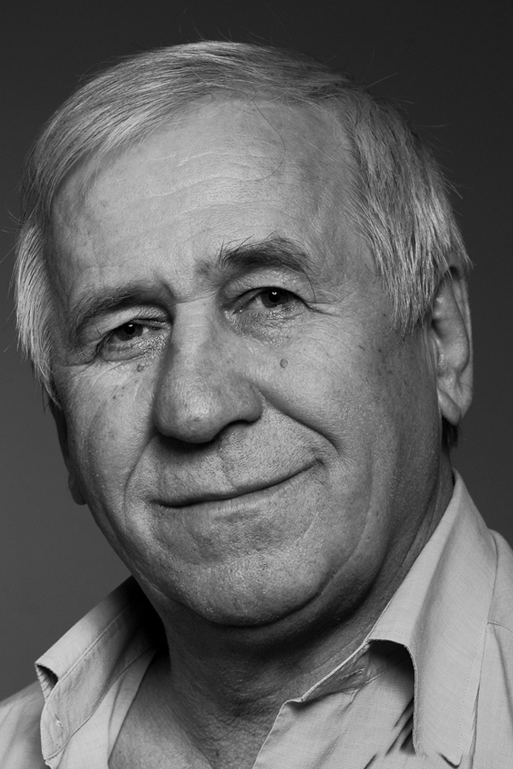
George Mihăiță
5.0
Cunoscut actor de teatru si film, născut pe 23 septembrie 1948, în Moreni / Dâmbovița, a absolvit Institutul de Artă Teatrală
și Cinematografică din București, promoția 1971, clasa profesorului universitar Sanda Manu.
Zeci de roluri în piese de teatru la Teatrul de Comedie, Teatrul L. S. Bulandra, teatrul Național I.L. Caragiale etc.,
în film (Reconstituirea/1968, regizat de Lucian Pintilie fiind un film de referință al cinematografiei românești),
apariții TV, în piese de teatru, seriale sau emisiuni de divertisment.
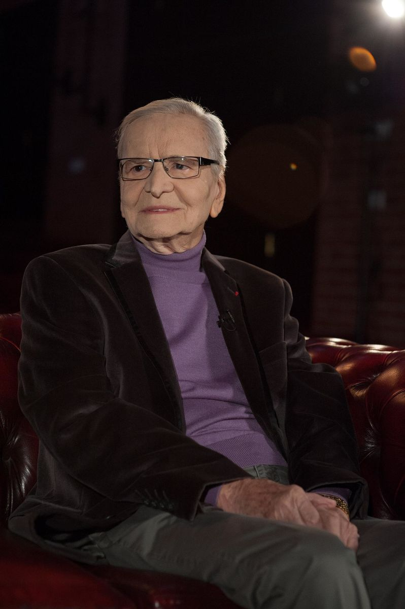
Radu Beligan
6.7
Radu Beligan (n. 14 decembrie 1918, comuna Galbeni, judetul Bacau) este un actor român cu o bogată activitate în teatru,
film, televiziune și radio. Membru PSD din 1947. Membru al Partidului Comunist Român din 1962. Deputat în Marea Adunare
Națională a Partidului Comunist Român. A fost ales membru de onoare al Academiei Române în 2004.
Radu Beligan a interpretat roluri celebre, cum ar fi caractere ale dramaturgilor literaturii române: Ion Luca Caragiale,
Barbu Stefanescu Delavrancea, Camil Petrescu, Tudor Mușătescu, Mircea Ștefănescu, Victor Ion Popa, Victor Eftimiu,
Mihail Sebastian, Aurel Baranga, Alexandru Mirodan și universale: William Shakespeare, Carlo Goldoni, Nicolai Vasilievici Gogol,
Anton Cehov, George Bernard Shaw, Maxim Gorki, Albert Camus, Jules Romain, Eugen Ionescu, Jean Anouilh, Friedrich Dürrenmatt,
Edward Albee, Peter Shaffer, Patrick Süskind, Neil Simon, Umberto Eco.
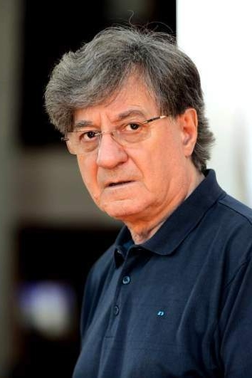
Ion Caramitru
7.1
De origine macedo-romana, născut în București pe 9 martie 1942, Ion Caramitru a fost un om de teatru, film, televiziune
și un politician roman.
A absolvit I.A.T.C.-ul în 1964 clasa profesor Beate Fredanov.
Repertoriul său actoricesc cuprinde roluri principale în piese de teatru importante semnate de autori precum William Shakespeare, A.P. Cehov, Luigi Pirandello, Georg Büchner, Bernard Shaw, Alfred de Musset etc. A colaborat cu mari regizori ai scenei românești precum Sică Alexandrescu, Moni Ghelerter, Liviu Ciulei, Vlad Mugur, Andrei Șerban, Radu Penciulescu, Alexandru Tocilescu, Cătălina Buzoianu.
A absolvit I.A.T.C.-ul în 1964 clasa profesor Beate Fredanov.
Repertoriul său actoricesc cuprinde roluri principale în piese de teatru importante semnate de autori precum William Shakespeare, A.P. Cehov, Luigi Pirandello, Georg Büchner, Bernard Shaw, Alfred de Musset etc. A colaborat cu mari regizori ai scenei românești precum Sică Alexandrescu, Moni Ghelerter, Liviu Ciulei, Vlad Mugur, Andrei Șerban, Radu Penciulescu, Alexandru Tocilescu, Cătălina Buzoianu.
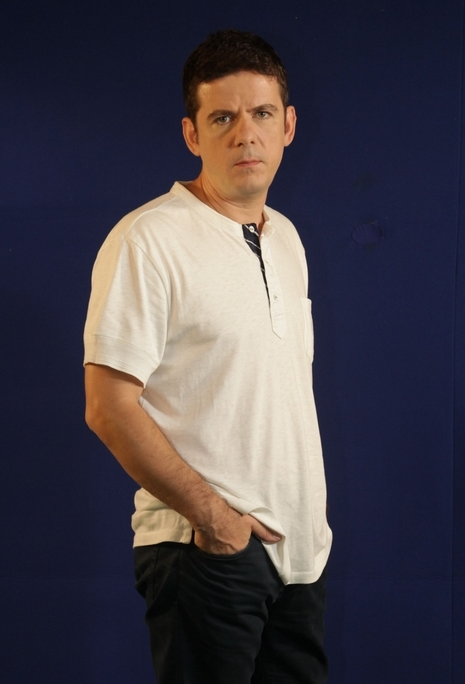
Vlad Zamfirescu
8.0
Vlad a absolvit Universitatea Națională de Artă Teatrală și Cinematografică I.L. Caragiale din București, clasa Ion Cojar și,
în prezent, își pregătește lucrarea de doctorat cu tema "Eroi shakespearieni". Din 1998, e angajat al teatrului Lucia Sturza Bulandra
din București dar colaborează cu teatrul Act și Nottara din București, cu Teatrul Național din Cluj Napoca și cu teatrul
George Ciprian din Buzău. Din 2005, e președintele companiei culturale Catharsis.
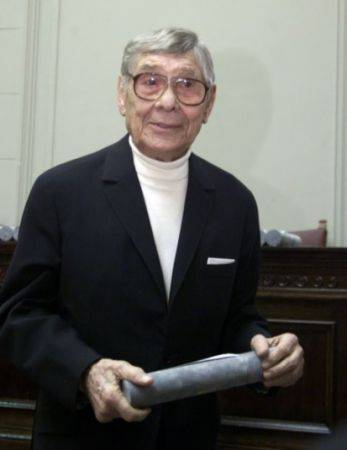
Colea Răutu
8.0
Colea Răutu (n. Nikolai Rutkovski, 28 noiembrie 1912, Limbenii Noi, județul Bălți, astăzi în Republica Moldova - d. 13 mai 2008,
București) a fost un actor român de teatru și film. A fost cel mai mare fiu din cei patru copii ai familiei Rutkovschi,
alături de Larisa, Natalia și Valentin. A fost elev la Colegiul „Regele Ferdinand” din Chișinău. Nu i-a plăcut niciodată cartea,
așa cum singur recunoștea, în schimb îi plăcea foarte mult fotbalul, jucând câtva timp în echipa Uzinelor „Mociornița” din București.
A urmat apoi Conservatorul de Artă Dramatică din București. A fost mai întâi corist la Opera din Cluj.
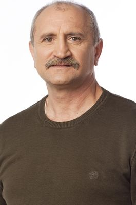
Șerban Ionescu
8.1
Actorul Teatrului Național din București s-a născut pe 23 septembrie 1950 în Corabia. Fiindcă tatăl, pilot de vânătoare, era detașat
mereu în altă parte și-a petrecut copilaria între Brașov și Caracal, unde tatăl său lucra. A urmat cursurile Școlii Populare de Artă,
a recitat mult și după patru încercări a intrat la teatru.
A absolvit Institutul de Artă Teatrală și Cinematografică la clasa regretatului Amza Pelea si la terminarea facultății
a fost repartizat la Teatrul din Petroșani unde a interpretat numeroase roluri memorabile pe scenă: "Locțiitorul" de Horia Lovinescu,
„Pluta Meduzei” de Marin Sorescu, regia Florin Fătulescu, „În căutarea sensului pierdut” de Ion Băieșu, regia Florin Fătulescu.
Teatrul din Petroșani a fost o rampă de lansare pentru acesta, a urmat să joace la Teatrul Mic și Teatrul din Sibiu, Teatrul de comedie,
Teatrul Odeon, după care din 2001 a putut fi admirat în producțiile TNB.
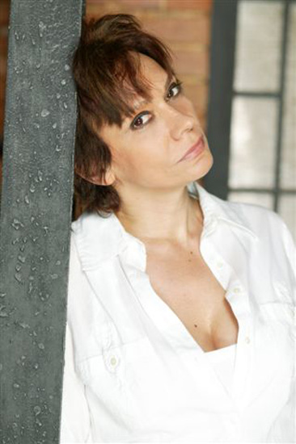
Oana Pellea
7.4
Oana Pellea s-a născut la 29 ianuarie 1962 în București si este fiica Domnicăi Mihaela, născută Policrat, și a actorului român
Amza Pellea (7 aprilie 1931 — 12 decembrie 1983). Actrița a studiat la Academia Română de Teatru și Film și a terminat studiile
în promoția 1984, la clasa prof. Sanda Manu. Colegii săi de promoție au fost Carmen Trocan, Mioara Ifrim, Luminița Stoianovici,
Răzvan Popa, Cristian Rotaru, Adrian Păduraru și Claudiu Istodor. Din clasa lui Olga Tudorache, colegii săi au fost Carmen Tănase,
Bogdan Gheorghiu.
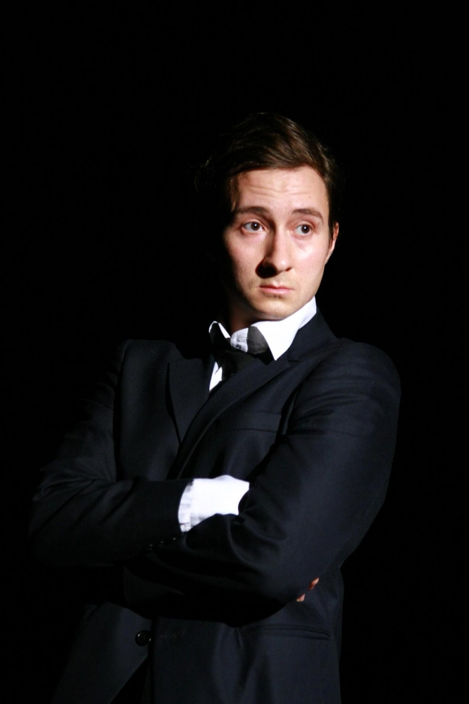
Dan Rădulescu
7.3
Dan Radulescu este născut la 25 septembrie 1985, în Bucuresti și este fiul unuia dintre cei mai respectați chirurgi din România,
medicul Dan Radulescu.
Imediat după absolvirea Colegiului German Goethe, Dan Radulescu a dat admiterea la Universitatea Națională de Artă Teatrală și
Cinematografică „Ion Luca Caragiale" și a intrat la clasa regretatului Adrian Pintea, iar coordonator de an i-a fost Florin Zamfirescu.
După ce și-a luat diploma de actor, Dan Radulescu a simțit nevoia să se perfecționeze și a terminat și masterul de „Arta Actorului",
sub atenta supraveghere a regizorului Gelu Colceag.
Talentul său i-a asigurat succesul încă din primul an de studii, când a fost sunat de echipa de casting de la Castel Film și ofertat
să joace câteva scene alături de celebrul Van Damme. În plus, Dan Radulescu a avut un mare avantaj de partea sa, acela că
vorbește fluent trei limbi străine: engleza, franceza și germana.